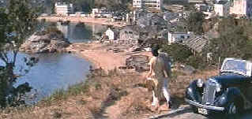

| Love
is a Many Splendored Thing/C+,B+ |
|
Fox/1955/102m/WS
2.35
|
A lush
production filmed on location in Hong Kong, Love is a Many
Splendored Thing is romance whipped up from the
autobiographical work of Han Suyin, a Eurasian doctor. While
working on the staff of a Hong Kong hospital, Suyin meets
American correspondent Mark Elliott. The film cuts to the quick
and the romance between the widowed doctor and the married but
estranged correspondent blossoms fasters than tulip at the first
warmth of Spring. The problems their romance encounters are
truly dated, but you have to cut the filmmakers some slack and
remember this was made in 1955.
 |
| A
beach rendezvous provides another photo op. ©Fox |
Jennifer
Jones, playing Han Suyin, does not look remotely Eurasian, and
this stood out annoyingly in some scenes when references are
made to her "obvious" racial origins. That said, Jones
brings a mature dignity to the character and the chemistry
between her and William Holden, playing Elliott, is
excellent. Holden does a typically fine job of being
charming and making himself fit in with his surroundings. Now,
you know these two adults are having one hot affair and though
little is depicted on the screen, the heat comes through.
The real stars of Love is a Many
Splendored Thing are the glorious and exotic locations, the
gorgeous costumes and the authentic sets. Director Henry King,
Fox's top "A" list director, makes the most of his
production team. Lots of sweeping harbor shots and views with
boats in the background show off the postcard photography of
Leonard Shamroy, veteran of many of Fox's biggest productions.
To his credit, King keeps the story moving along with
dispatch.
John Patrick, fresh from writing the script
for Three Coins in the Fountain, lays on the soap opera
flourishes. At least Patrick's screenplay doesn't lay on the sob
songs too heavily, which prevents the film from breaking down
into mordant slop emphasizing the racial differences between the
characters. There's almost nothing cute in this script, almost
no comic relief, and that's a relief in itself. The only truly
embarrassing segment of the film is the mainland China scenes
when Suyin returns to visit because of a family crisis. The
title song, written by Sammy Fain and Paul Webster, is
expertly woven into the score by Alfred Newman. Both song and
score won Academy Awards.
Transferred from vintage Cinemascope
elements, the DVD color is delightfully vital. The filmmakers
use a liberal dose of red in the production, and the DVD
presents it with luster of a fresh poppy flower. Colors are very
stable in scene transitions and no detectable color fringing is
apparent. Though it's not an anamorphic transfer, detail is
extracted with great success. Edge enhancement is minimal in
complex long shots, but flicker and other annoying NTSC
artifacts are practically eliminated. The old style stereo
presentation has some dialogue from the left and right front
speakers, but it is never disconcerting. The romantic music of
Newman hangs in the air above the gorgeous vistas.
|
|

The
Exquisite Muse of Zhang Yimou

The powerful image-making of Zhang
Yimou has revealed itself in virtually every film he has made.
Coupled with his remarkable collaboration with actress Gong Li,
Zhang's has built a stunning body of work Click the image to read
all about it.

The
Movie Poster Archive include extensive poster images from the
films of stars like Susan Hayward, Kirk Douglas, Katharine
Hepburn and many more. This month's featured star is
Susan Hayward
  Lovers
of Hong Kong movies will relish
MC4's site that includes reviews and other information
about the Hong Kong movie scene. Lovers
of Hong Kong movies will relish
MC4's site that includes reviews and other information
about the Hong Kong movie scene.

Looking
for a fix of irreverent flick
dissection. Check out The
Big Combo where four guys rave
and rant about movies.
 Kinoeye
Archive Kinoeye
Archive
This
is a resource of all content-rich
materials on the web relating to Central
and East European cinema. The ultimate
aim of the Kinoeye Archive is to provide
a near-as-damn-it definitive index of
intelligent and thoughtful
English-language analysis of Central and
Eastern European cinema on the web.
They may
be judgmental, but that's the point, isn't it. Lots of DVD reviews
plus news and more.
Click on the link to visit the judge's chambers.
|